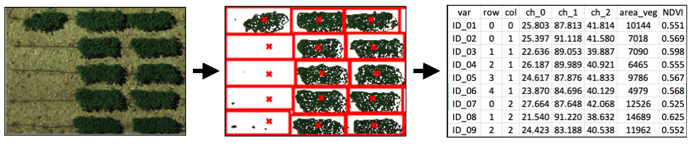
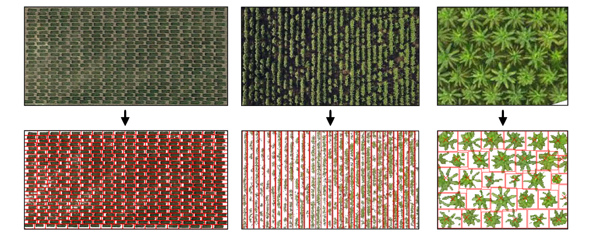
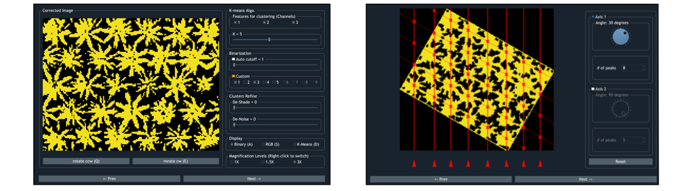

Easy Way to Extract Info.
from Aerial Images
Discover More

Powerful toolsets for
image segmentation
GRID provide mostly used tools for image sementation:
K-Means clustering, noise reduction, and optima searching algorithm are all implemented in one place.

Works for wide variety of field layouts
Other than dealing with field plots arranged along two perpendicular axes, GRID can also work with plots arranged in arbitrary angles.

Graphical User Interface
The entire analysis can be implemented in a user-friendly GUI. Users can preview the results in real-time and figure out the optimum configuration for the segmentation.

Questions?
Welcome to contact the author
James Chen: chun-peng.chen@wsu.edu
or report issues on GitHub